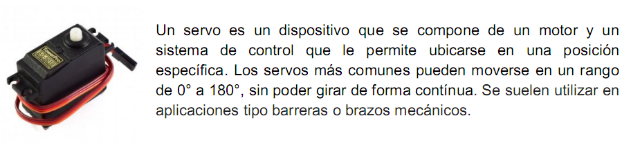
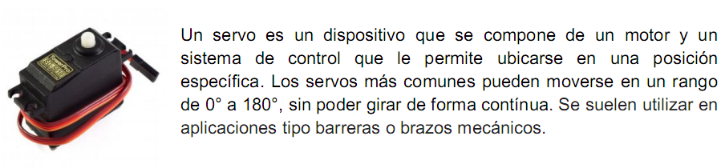
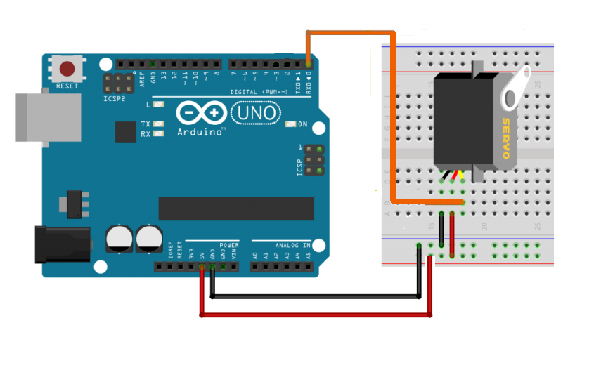
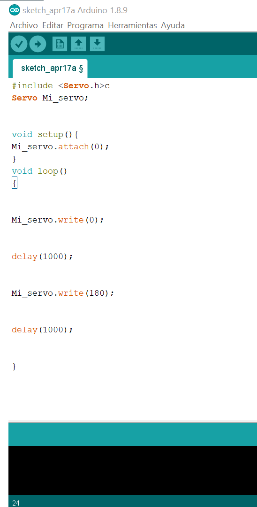
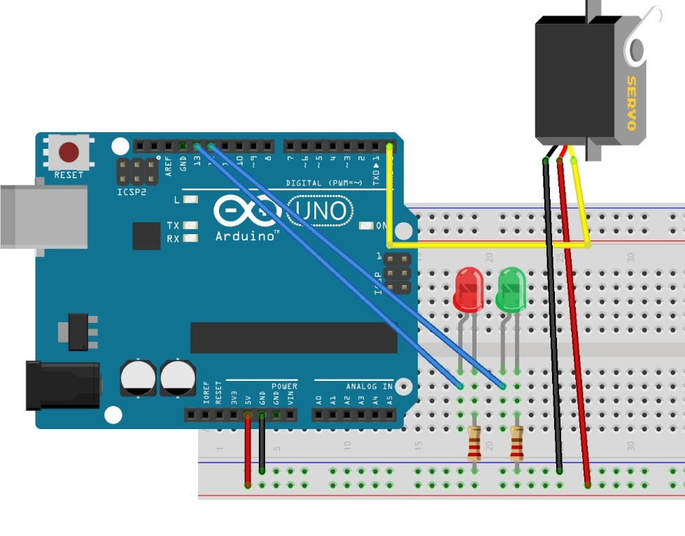

Servo Motor
Para este circuito vamos a necesitar:
Placa Arduino
Servo Motor
cable dupont : 
Protoboard: 

Para este circuito vamos a necesitar:
Placa Arduino
Servo Motor
cable dupont :
Protoboard:


Copiamos el código que esta en recuadro y lo pegamos en el IDE de Arduino
|
#include <Servo.h>
|
Una vez copiado quedaría igual que la imagen para cargar el programa en la placa Arduino no te olvides de pulsar  y se grabara en el microcontrolador AT328 para poder ejecutarlo
y se grabara en el microcontrolador AT328 para poder ejecutarlo

Se utiliza para comprobar si una determinada condición se cumple. Si la condición se cumple, se pasará a ejecutar las sentencias encerradas dentro del bloque if, si no se cumple la condición, el programa saltará este bloque sin ejecutar ninguna instrucción.
if(digitalRead(2==1) // ejecuta la instrucción
{
servo_0.write(90); // ejecuta instrucciones;
}
Recordá este concepto, porque te va a acompañar durante todo el proceso de programar nuestros sensores.
Ya con nuestro Arduino conectado al servo motor, podremos agregarles led para que funcionen como "Alerta".
Es decir, cuando el servo esté en 0, es porque estará abierto, es decir encenderá el led color verde. Y por el contrarío cuando el servomotor esté en 180, el led estará en color rojo.

Copiando el siguiente codigo en tu IDE de Arduino, entenderás la estructura del condicional IF y como se implementa para resolver estos ejercicios. Copia y pega el codigo.
#include <Servo.h> |
Ahora sumemos un buzzer, funciona de la misma manera que un led.
Así que cada ver que el cervo se mueva, programalo para haga un pitido
Obra publicada con Licencia Creative Commons Reconocimiento Compartir igual 4.0